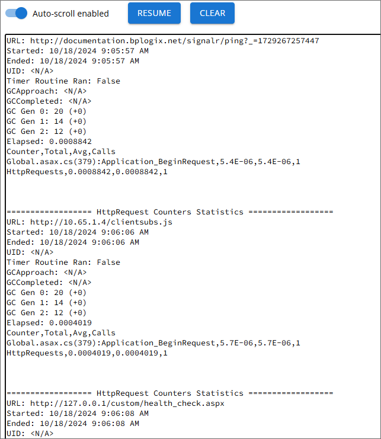

For Process Director v6.1.300 and higher, the Troubleshooting section of IT Admin contains a Live Stats page that continually refreshes to display current performance statistics for the system.

There are some health check system events that run on a recurring basis to poll various performance counters. The results of this polling are displayed in a continuous scroll on this page. The three primary health check polls are:
clientsubs JavaScript poll, and,Examples of results from all three of these are shown in the example screenshot above. Each statistics block displays the length of time it takes for various processes to complete on the system. The time for completion is given in seconds. Ideally, completion should take only a decimal fraction of a second, e.g.:
Elapsed: 0.0008842
Often, the fractions are presented in scientific notation, e.g.:
Global.asax.cs(379):Application_BeginRequest,5.4E-06
In the example above, the elapsed time would be 0.0000054 seconds.
At the top of the Live Stats page, there are three controls to manipulate the display of the performance statistics.
Auto-Scroll Enabled is a switch control that's turned on by default. This setting enables the page to continually scroll as new statistics are reported. Because the reporting occurs frequently, you may wish to turn this switch off to stop the automatic scrolling, in order to concentrate on a specific section of the stats, without having the continuously scroll out of view. Turning this switch off does not stop the reporting from being presented on the page, it merely stops the automatic scrolling when new results are reported.
A Pause button, when clicked, will pause the reporting completely. When paused, this button will be replaced by a Resume button that can be clicked to resume the statistics reporting.
A Clear button erases all of the current statistics from the screen, and starts over with a blank page.
When this page is first opened, the reporting window will have no data initially. Statistics posting does not begin until the page is opened. It may take a few seconds for the first polling results are displayed.
When reporting performance issues via Tech Support, you may be asked to open this page, let it run for a few minutes, then copy and paste the results into a text file, which you can then attach to the support ticket.
The Troubleshooting section's pages can be accessed via Table of Contents displayed on the upper right section of this page, or by using one of the links below:
Server Control: A list of links that invoke various server actions.
System Information: Provides a display of relevant server statistics.
Impersonate: Enables you to impersonate other users.
Audit Logs: Enables access to the Audit logs saved in the Process Director Database, when this feature is configured for appropriately licensed installations.
Logs: Enables access to the system logs.
Log Alerts: Enables you to set alerts for specific events that might occur in the log files.
Run Email Tests: Enables sending test emails from the system.
Help: From the Troubleshooting section, clicking the Help button will open a new browser tab that displays the documentation web site for Process Director at https://doc.bplogix.com. There is no need for further documentation about this link.